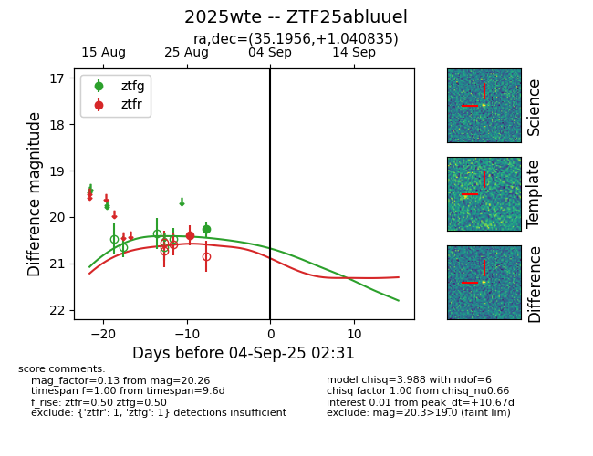

FINK: ZTF25abluuel
Lasair: ZTF25abluuel
ALeRCE: ZTF25abluuel
TNS: 2025wte
YSE: 2025wte
ZTF25abluuel (ztf,fink)
2025wte (tns,yse)
equatorial (ra, dec) = (35.1956,+1.04083)
galactic (l, b) = (163.8830,-54.56695)

last ztfg=20.26, ztfr=20.39
1 ztfg, 1 ztfr detections